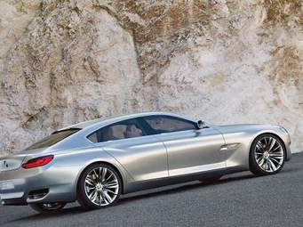
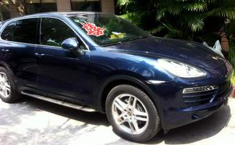

|  | Bayerische Motoren Werke AG German for Bavarian Motor Works), usually known under its abbreviation BMW is a German luxury vehicle, sports car, motorcycle, and engine manufacturing company founded in 1916. It is one of the best-selling luxury automakers in the world.[3]The company is a component of the Euro Stoxx 50 stock market index.[4] Headquartered in Munich, Bavaria, BMW is the parent company of Mini and Rolls-Royce Motor Cars. The company produces motorcars under the BMW Motorsport division and motorcycles under BMW Motorrad, and plug-in electric cars under the BMW i sub-brand and the "iPerformance" model designation within the regular BMW lineup. |
|  | Dr. Ing. h.c. F. Porsche AG, usually shortened to Porsche AG (German pronunciation: [ˈpɔʁʃə] ( listen)), is a German automobile manufacturer specializing in high-performance sports cars, SUVs and sedans. Porsche AG is headquartered in Stuttgart, and is owned by Volkswagen AG, which is itself majority-owned by Porsche Automobil Holding SE. Porsche's current lineup includes the 718 Boxster/Cayman, 911, Panamera, Macan and Cayenne.Ferdinand Porsche founded the company called "Dr. Ing. h. c. F. Porsche GmbH" in 1931,[3] with main offices at Kronenstraße 24 in the centre of Stuttgart.[4] Initially, the company offered motor vehicle development work and consulting,[3] but did not build any cars under its own name. One of the first assignments the new company received was from the German government to design a car for the people, that is a "Volkswagen".[3] This resulted in the Volkswagen Beetle, one of the most successful car designs of all time.[5] The Porsche 64 was developed in 1939 using many components from the Beetle.[3] Porsche's tank prototype, the "Porsche Tiger", that lost to Henschel Son's Tiger I. Panzerjäger Elefant, after the loss of the contract to the Tiger I Porsche recycled his design into a tank destroyer. During World War II,[6] Volkswagen production turned to the military version of the Volkswagen Beetle, the Kübelwagen,[6] 52,000 produced, and Schwimmwagen,[6] 15,584 produced.[7] Porsche produced several designs for heavy tanks during the war, losing out to Henschel Son in both contracts that ultimately led to the Tiger I and the Tiger II. However, not all this work was wasted, as the chassis Porsche designed for the Tiger I was used as the base for the Elefant tank destroyer. Porsche also developed the Maus super-heavy tank in the closing stages of the war, producing two prototypes |